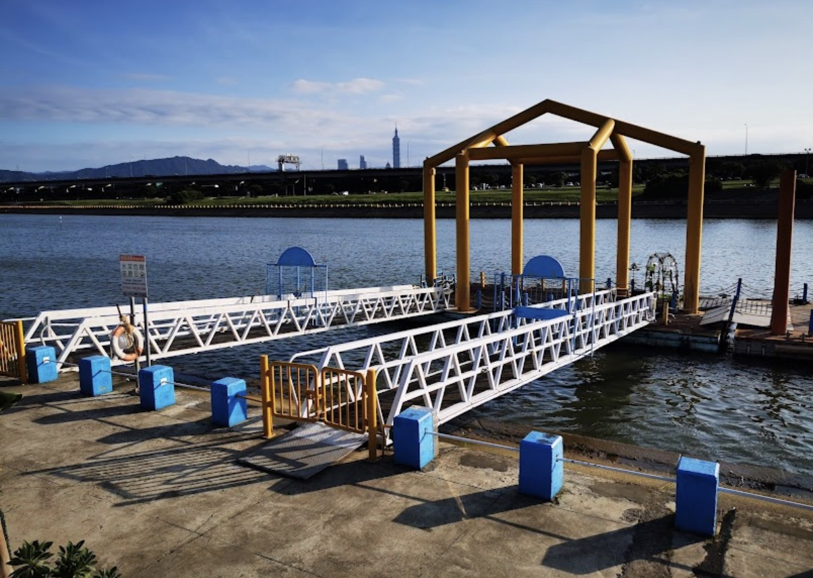

2026年 6月 6日 (六)
下午 13:30 集合入場
美堤河濱公園
（大草皮野餐區）
NT$ 150 / 人
包含：精緻韓系輕食餐點、飲品、活動平安保險
自行前往由 3 號出口出站，沿敬業三路往河濱公園方向步行約 10-15 分鐘，即可抵達美堤疏散門。

自行前往可搭乘 72、222、藍26 至「美堤碼頭」站下車直達；或搭乘多線公車至「明水路口’站再步行進入。

學校集合當天中午 12 點 於「世新大學山洞口」處（會有總召拿著世新資傳的系旗迎接大家喔！）。

若活動前一日氣象局預報降雨機率大於 60%，活動將延期一週，或改至室內備案（另行在班群通知）。
初夏防曬不可少！建議攜帶防曬乳、遮陽帽、防蚊液。為響應環保，請同學**自備環保餐具與水瓶**。
線上報名填寫完成後，請於 3 日內將費用（NT$ 150）交給總務股長。若因故需取消，請於活動前 3 天告知以利辦理保險退費。
戶外活動請注意自身安全。系上老師及助教也會共同參與指導。若有特殊疾病或飲食過敏（如素食），請務必於報名表單備註。